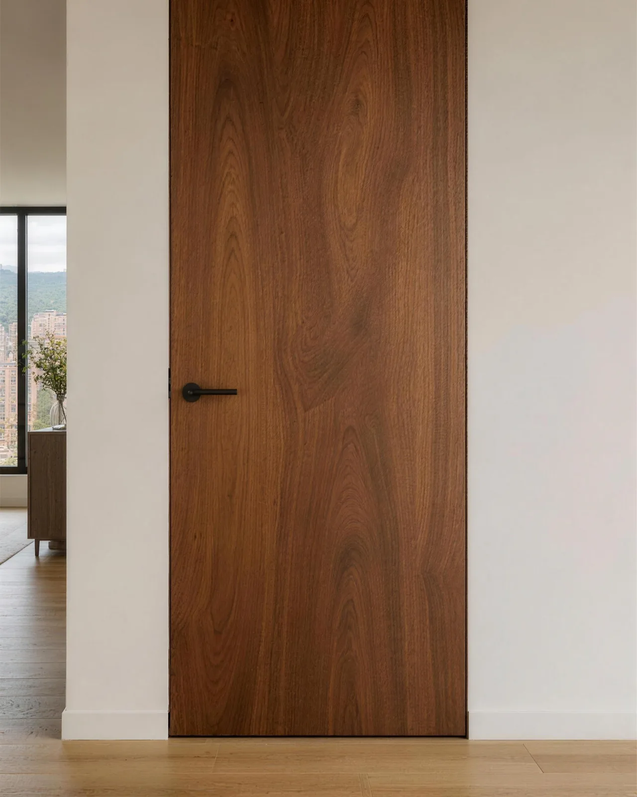
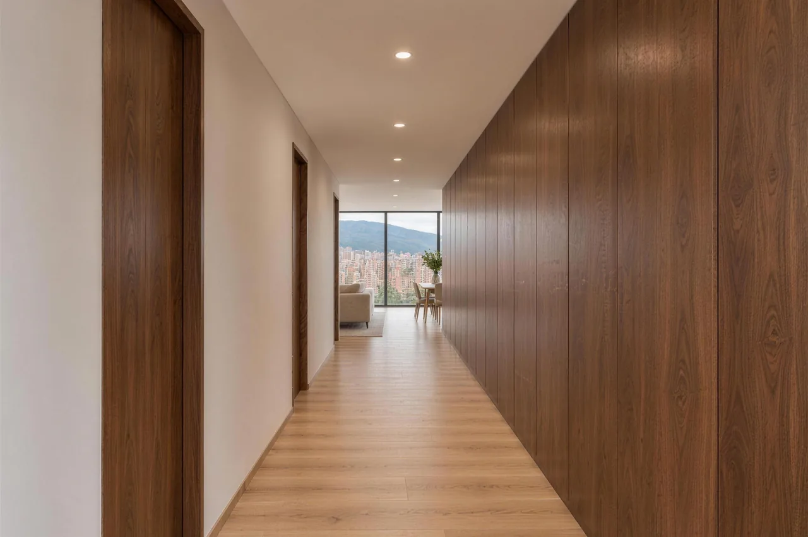
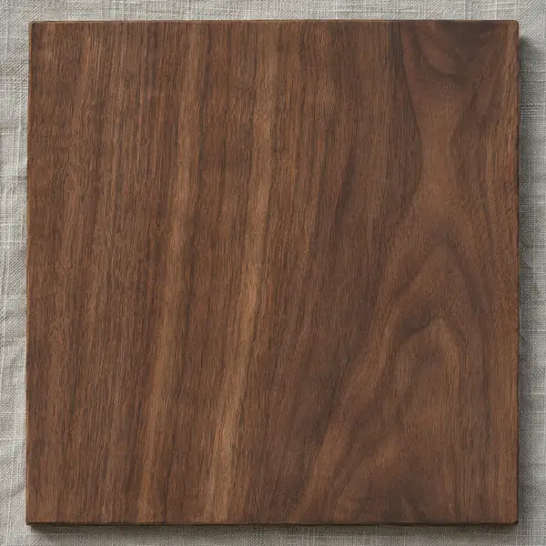

Puertas en madera
Puertas de piso a techo, marcos y muros de almacenamiento en madera para apartamentos en Bogotá.
Desde $850.000 por puerta instaladaIVA incluido. El valor final depende de las medidas y los materiales.

- Visita y medidas gratisVamos a tu apartamento sin costo
- Garantía de 1 añoEn todos los trabajos que hacemos
- Herrajes con cambio por 1 añoBisagras, correderas y manijas
- Cotización en máx. 7 días hábilesPor escrito y válida por 14 días
Qué incluye
Un solo equipo, del plano a la instalación.
- Puertas batientes o corredizasA la altura que necesites
- Marcos y guardaescobasEn la misma madera
- Herrajes ocultosBisagras y cerraduras
- Muros de almacenamientoPuertas de presión
- Instalación y ajusteAplomadas y niveladas
Desde $850.000 por puerta instalada, IVA incluido. El valor final depende de las medidas y los materiales: te lo damos por escrito después de la visita, que es gratis.
Pide tu cotización

Proyectos
Puertas en fotos.
Puertas de piso a techo
Ver todos los proyectos
Cómo trabajamos
Así lo hacemos.
El plazo y el valor quedan por escrito antes de empezar.
- 1
Escríbenos
Por WhatsApp nos cuentas qué quieres hacer y en qué barrio.
- 2
Visita y medidas gratis
Vamos al apartamento sin costo, medimos y vemos el espacio contigo.
- 3
Plano y cotización
En máximo 7 días hábiles te enviamos el diseño, los materiales y el valor por escrito, válido por 14 días.
- 4
Fabricación
Cortamos y preparamos cada pieza según el plano aprobado.
- 5
Instalación y entrega
Instalamos, ajustamos y revisamos contigo antes de entregar.
Preguntas
Preguntas frecuentes
¿Cambian solo las puertas sin tocar el marco?
Depende del estado del marco. En la visita te decimos si se puede conservar.
¿Hacen puertas de piso a techo?
Sí, con bisagras ocultas y madera estable para que no se tuerzan.
¿Pueden hacer las puertas de todo el apartamento?
Sí. Las fabricamos todas con la misma madera y el mismo acabado.
¿La visita para medir tiene costo?
No. La visita y las medidas en tu apartamento son gratis.
¿Qué garantía dan?
Todos nuestros trabajos tienen garantía de 1 año. No cubre daños por mal uso de la carpintería ni daños causados por el cliente. Los herrajes (bisagras, correderas y manijas) tienen garantía de cambio por 1 año.
¿Cuándo recibo la cotización?
En máximo 7 días hábiles después de la visita te enviamos el diseño, los materiales y el valor por escrito. La cotización es válida por 14 días después de entregada.
¿Cuánto cuesta?
Desde $850.000 por puerta instalada, IVA incluido. El valor final depende de las medidas y los materiales que elijas; te lo damos por escrito después de la visita.
Otros servicios
Cotización por proyecto
¿Lo hacemos en tu apartamento?
Cuéntanos qué quieres hacer y en qué barrio queda el apartamento. Te respondemos por WhatsApp y agendamos la visita gratis para medir.
También por correo: andokcarpinteria@gmail.com